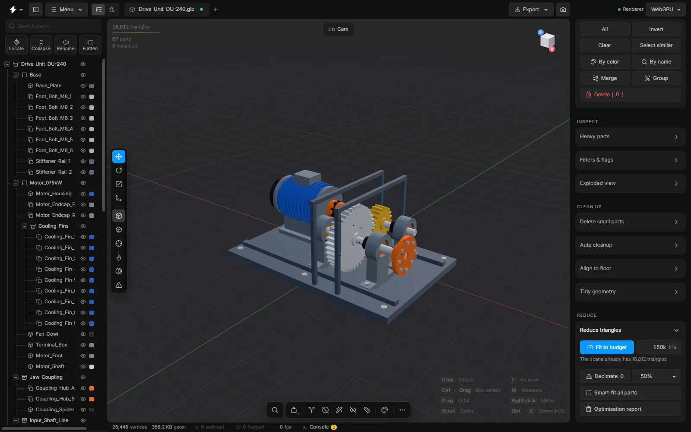

Align to floor
Stand a model upright on the grid, centred over the origin, when it arrived on its side or far away from the centre of the scene. A small drawing shows the result first.
Files arrive anywhere and any way up: a part modelled 40 metres from its origin, an assembly lying on its side. Align to floor turns the whole model in steps and puts it on the grid, over the point 0,0,0.
It is a floating card over the viewport. A small 3D drawing at the top shows what will happen. The model itself does not move until you press the Align to floor button.


When to use it
Right after opening a file, before anything else, if the model is not standing the way you expect. A model that sits on the floor at the origin is easier to orbit, and easier to place in the next program.
Open the card
- Press CtrlK and choose Align model to the floor….
- Or click the three dots at the right end of the bottom toolbar (All commands) and choose Align to the floor….
- Press Esc or Done to put the card away.
The drawing
The drawing shows the floor with its grid, the origin where the three axes meet, and the model as the box it fills. The model’s own top and front are two arrows on it. They turn with the model, so you can see which way it will end up. A yellow ring marks the point of the model that will go to zero, and a dashed line joins it to the origin while the two are apart.
While the drawing differs from the real model, it says Preview: not applied yet. With no model open, it draws an example box, so you can try the buttons before you open a file.
Steps
- Open the card.
- If the model lies on its side, use the turn buttons. Each of the rows X, Y and Z has two arrows that turn the model about that axis, one step back or one step forward. A step is 90° to begin with.
- Press them until the arrows in the drawing show the model the right way up. Only the drawing turns.
- Choose which side of the model goes to zero with the buttons Low, Mid, High and Keep. Again only the drawing changes.
- Press Align to floor. Now the model turns and moves so that it stands on the grid with its middle over 0,0,0. You watch it move.
What the options mean
- Turn, step
- How far one press turns the model. 90 gives quarter turns. A small number straightens a model that is slightly tilted.
- Sits at zero with its: X and Y
- Which side of the model goes to 0 on that axis: Low, Mid (the middle), High, or Keep to leave it where it is. The rows are named after the scene’s floor axes: X and Y when Z is up.
- Sits at zero with its: Up
- Floor stands the model on the grid. Top hangs it from the grid. Mid centres it. Keep leaves its height alone.
- Align to floor
- Does it: turns and moves the model as the drawing shows.
- Reset
- Puts the model back where and how it was loaded, and puts the card back to its start: no turn waiting, and Mid, Mid and Floor.
Mid, Mid and Floor is the usual choice: it stands the model on the grid, centred over the origin.
To repeat the last choices without opening the card, press CtrlK and choose Align model to the floor (with the last choices).
Undo
Pressing Align to floor is one undo step. Reset in the card goes back to how the file was loaded.